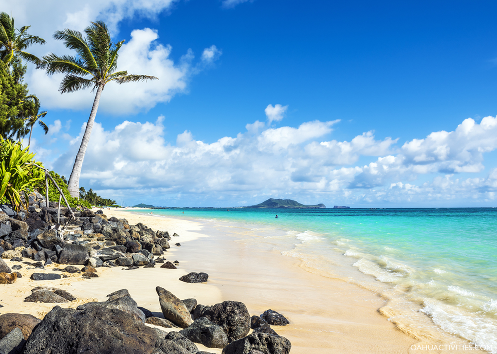

Sunset Beach
Sunset Beach is famous for surfing competitions and beautiful sunsets. It is one of the most popular beaches on Oahu’s North Shore.
Beach View


Sunset Beach is famous for surfing competitions and beautiful sunsets. It is one of the most popular beaches on Oahu’s North Shore.
